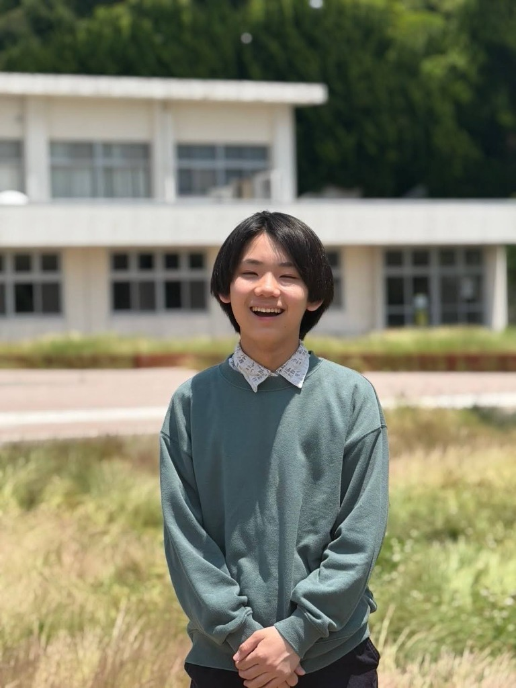

自社開発・デモ
高専生向けプロフィール／案件管理アプリ
高専生のプロフィール、スキル、案件情報を一つの画面で確認し、案件との接点をつくるための管理アプリです。
- 課題
- スキルや案件情報が分散し、マッチング前の確認に時間がかかる。
- 担当範囲
- 企画・要件整理・UI設計・フロントエンド実装。
- 期間
- 継続開発。
- 成果
- プロフィールと案件情報をまとめて確認できるデモを構築。
※顧客納品実績ではなく、隣の高専生による自社開発・デモです。
FOR BUSINESS
高専生チームと株式会社Ｙｕｕｔｈの開発支援で、必要な機能の整理から開発まで進めます。MVP、社内ツール、業務改善など、まずは課題の大きさを一緒に整理します。
CASE STUDY
公開できる範囲で、実際の画面・課題・担当範囲・期間・確認できた成果を整理しています。
自社開発・デモ
高専生のプロフィール、スキル、案件情報を一つの画面で確認し、案件との接点をつくるための管理アプリです。
※顧客納品実績ではなく、隣の高専生による自社開発・デモです。
SCOPE
案件の規模や体制に合わせて、必要な工程だけを組み合わせます。
目的・利用者・必要な機能を整理し、優先順位と確認事項を言語化します。
画面やデータの設計から、MVP・業務ツールの実装まで進めます。
動作確認やフィードバックをもとに、使い方と修正内容を整理します。
導入時の確認と、運用開始後の改善・保守について相談できます。
PROCESS & TEAM
法人窓口を株式会社Ｙｕｕｔｈが担当し、案件に合う高専生メンバーを編成します。
相談内容、契約、連絡事項をまとめる法人窓口です。
決めること、担当、次回確認日を共有しながら進行します。
必要なスキルに合わせてメンバーを編成し、実装内容を確認します。
報告頻度は案件ごとに合意し、引き継ぎ可能な状態で記録を残します。
COST & SCHEDULE
継続的な課題整理から、必要なときの開発発注まで。サブスクと案件受託を分け、要件・成果物・期間・対応範囲を確認したうえでご案内します。
SUBSCRIPTION
「開発し放題」ではなく、開発課題を継続的に整理し、必要なときに高専生チームへ発注できる状態をつくるサービスです。
PARTNER
月額 3万円
まず相談先が欲しい企業
GROWTH
月額 8万円
継続的に改善したい企業
DEVELOPMENT PARTNER
月額 15万円〜
新規事業・開発部門向け
実際のアプリ開発や長時間の実装は、サブスク料金とは別に案件として見積もります。サブスクでは、毎月少しずつ課題が整理され、必要なときに開発へ移れる状態をつくります。
PROJECT PRICING
以下は代表的な目安です。高専生に適しているのは、最初は30〜100万円程度の小〜中規模案件です。
| 案件種別 | 価格帯 | 期間目安 |
|---|---|---|
| 要件整理・技術調査 | 10〜30万円 | 1〜2週間 |
| 業務自動化・簡易ツール | 30〜80万円 | 2〜6週間 |
| 社内Webアプリ | 60〜150万円 | 1〜2か月 |
| MVP・プロトタイプ | 80〜300万円 | 1〜3か月 |
| AI・技術PoC | 50〜200万円 | 1〜2か月 |
| 継続改善・保守 | 月5〜30万円 | 継続 |
300万円を超える案件や、医療・金融・基幹業務などの高リスク案件は、専門会社と組むか、要件整理・試作部分を中心に担当します。
HOW WE PRICE
「学生だから安くする」のではなく、作業・進行・品質・運用に必要な要素を合計して決めます。
| 学生チーム報酬 | 42万円 |
|---|---|
| PM・要件整理 | 6.4万円 |
| 品質レビュー | 4万円 |
| ツール・決済費 | 0.6万円 |
| バックアップ・修正予備費 | 1.2万円 |
| Yuuthの管理・運営手数料 | 5.8万円 |
| 合計 | 約60万円 |
PROJECT RANK
要件明確、低リスク、短期
30〜60万円要件整理が必要、複数人開発
60〜150万円MVP、AI、外部連携あり
150〜300万円高リスク、大規模、専門性が必要
300万円〜・外部連携納期が短い案件、要件が曖昧な案件、機密性が高い案件は、通常価格の1.2〜1.5倍を目安に個別相談します。
ADDITIONAL SERVICES
まずは案件と継続接点をつくり、実績と体制に合わせて支援領域を広げます。
月額5〜30万円で、納品後の改善やバグ修正を行います。
月額5〜20万円程度で、担当者の報告・整理・引き継ぎの時間を減らします。
企業が出した課題に、高専生が有償で提案・試作します。
協賛を通じて、高専生との仕事を起点にした相互理解の機会をつくります。
卒業した高専生や経験者を、品質レビュー・PM・技術メンターとして活用します。
REVENUE FLOW
当面は「月額3万円のパートナープラン」「30〜150万円の開発案件」「月額5〜30万円の保守・改善契約」に絞り、企業との継続接点と収益基盤をつくります。
FAQ
はい。目的・利用者・困っている業務を伺い、必要な機能と優先順位を一緒に整理します。
成果物と対応範囲を確認し、実装・確認に必要な期間を案件ごとに相談して決めます。
内容と影響範囲を確認したうえで、追加の見積もり・スケジュールをご案内します。
仕様・決定事項・進捗を記録し、必要に応じて引き継ぎできる状態をつくります。
利用するデータの種類と保管方法を事前に確認し、必要な権限・取り扱い範囲を合意して進めます。
CONTACT
Googleカレンダーの予約フォームから日程を選択してください。予約後、必要に応じて相談内容をメールでお送りください。
PARTNERS / ACCELERATORS / INTERVIEW
 採択・プログラム
採択・プログラム 研究・技術連携
研究・技術連携 地域連携
地域連携 官公庁関連
官公庁関連 報道掲載
報道掲載 報道掲載
報道掲載
神山まるごと高専 デザインエンジニアリング学科1年
「隣の高専生」代表。岡山県出身の16歳。
ミライノピッチ3部門受賞、なんチャレ2025最優秀賞、Akatsukiプロジェクト採択など、高専生として積極的に事業開発・技術開発に取り組む。
各高専から選りすぐりのエンジニアが、御社のプロジェクトをサポートします。
ポートフォリオを見る ↗
奥河董馬
ポートフォリオを見る ↗
中山亮佑
ポートフォリオを見る ↗
小田空音
ポートフォリオを見る ↗
中野楽士
ポートフォリオを見る ↗
中本慧思
長岡高専
眞野航輔
神山まるごと高専
中本怜祐
香川高専 詫間キャンパス
岡崎春一
香川高専 高松キャンパス
宮武幸人
広島商船高専
坂口拓海
鳥羽商船高専
阪本拓海
大島商船高専
縄田嵐
呉高専
西岡丈
高知高専
片岡勇登
隣の高専生の最新の事業紹介資料をご覧いただけます。
PDFが表示されない場合はこちらからダウンロードしてください。